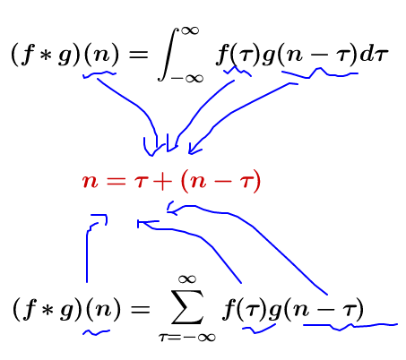

了解卷积¶
发表于 2014年7月13日
在 之前的一篇文章中，我们建立了对卷积神经网络的理解，而没有提及任何重要的数学。然而，要更进一步，我们需要了解卷积。
如果我们只是想了解卷积神经网络，它可能足以大致理解卷积。但这一系列的目的是把我们带到卷积神经网络的前沿，并探索新的选择。要做到这一点，我们需要非常深刻地理解卷积。
从数学上讲，卷积就是一种运算。 某种运算，能被定义出来，至少有以下特征：
- 首先是抽象的、符号化的
- 其次，在生活、科研中，有着广泛的作用
比如加法 \( a+b \) 是抽象的，本身只是一个数学符号, 但在现实中，有非常多的意义，比如增加、合成、旋转等等
卷积，是我们学习高等数学之后，新接触的一种运算，因为涉及到积分、级数，所以看起来觉得很复杂。
卷积的定义¶
我们称 \( (f \ast g)(n) \) 为 \( f,g \) 的卷积
其连续的定义为：
其离散的定义为：
这两个式子有一个共同的特征：

这个特征有什么意义？ 我们令 \( x=\tau ,y=n-\tau \)那么\( x+y=n \) 就是下面这些直线：
如果遍历这些直线，就好比，把毛巾沿着角卷起来。
只看数学符号，卷积是抽象的，不好理解的，但是，我们可以通过现实中的意义，来习惯卷积这种运算，正如我们小学的时候，学习加减乘除需要各种苹果、糖果来帮助我们习惯一样。
我们来看看现实中，这样的定义有什么意义。
掉落球的案例¶
想象一下，我们把球从某个高度扔到地上，在那里它只有一个运动维度。如果你放下球，然后从球落地点上方再次落下球，那么球走一段距离的可能性有多大？
让我们分解一下。第一次下降后，它将降落\( a \)单位远离起点与概率\( f(a) \)，其中\( f \)是概率分布。
现在，在第一次落球之后，我们把球捡起来，从它第一次落地点上方的另一个高度投下。球滚离新起点\( b \)单位距离的概率是：\( g(b) \)，如果球从不同的高度下降，则可能是不同的概率分布。
如果我们修复第一次落球的结果，这样我们就知道球是去距离\( a \)，让球去总距离\( c \)，在第二次落球的距离也固定在\( b \)，其中\( a+b=c \)。因此，发生这种情况的可能性是 \( f(a)⋅g(b) \)(见附注 1)
让我们用一个特定的离散示例来思考这个问题。我们希望总距离 \( c \)为 3。如果它第一次滚动，\( a=2 \)，第二次它必须滚动\( b=1 \)，才能达到我们的总距离\( a+b=3 \)。这样做的概率是\( f(2)⋅g(1) \)。
但是，这不是我们到达总距离 3 的唯一方法。球可以第一次滚动 1 个单位，第二次可以滚动 2 个单位。或0单位的第一次和所有3单位第二次。它可以去任何\( a \)和\( b \)，只需要加总后是3。
概率分别为\( f(1)⋅g(2) \)和\( f(0)⋅g(3) \)。
为了找到球到达总距离的总可能性，我们不能只考虑一种可能到达的方法。相反，我们考虑所有可能的方法，将\( c \)分成两次落球\( a \)和 \( b \)，并总结出每种方式的概率。
\( ... f(0)⋅g(3) + f(1)⋅g(2) + f(2)⋅g(1) ... \)
我们已经知道，每种情况 \( a+b=c \)的概率都可以定义为 \( f(a)⋅g(b) \)。因此，总结每个解决方案，我们可以将总的可能性表示为：
\( \sum_{a+b=c} f(a) \cdot g(b) \)
原来，我们正在做一个卷积！特别是，定义了在\( c \)上实现的\( f \)和\( g \)的卷积：
\( (f\ast g)(c) = \sum_{a+b=c} f(a) \cdot g(b) \)
如果我们替换\( b=c-a \)，我们会得到：
\( (f\ast g)(c) = \sum_a f(a) \cdot g(c-a) \)
这是卷积的标准定义附注2。
为了使这更具体一点，我们可以从球可能降落的位置来考虑这个问题。第一次下降后，它将降落在中间位置\( a \)，概率为 \( f(a) \)。如果它降落在\( a \)，它有在一个位置着陆\( c \) 的概率\( g(c-a) \)。
为了获得卷积，我们考虑所有中间位置。
可视化卷积¶
有一个非常好的技巧，帮助人们更容易地思考卷积。
首先，观察。假设一个球落在离起点一定距离\( x \)的地方的概率是\( f(x) \)。那么，之后，它的起点距离它的落脚点\( x \)的概率是\( f(-x) \)。
如果我们知道球在第二次落地后落在c的位置，那么之前的位置是a的概率是多少？
所以，前一个位置是a的概率是\( g(-(a-c))=g(c-a) \).现在，考虑每个中间位置对球最终落在c处的概率。
现在，考虑每个中间位置对球最终落在c处的概率。我们知道第一个落点把球放到中间位置a的概率是\( f(a) \)。我们还知道，如果它落在c处，它一直在a处的概率是\( g(c-a) \)。

将此相加，我们得到卷积。
这种方法的优点是，它使我们能够在一张图片中直观地看到卷积在c值上的评估。通过移动下半部分，我们可以在c的其他值上评估卷积，这使我们能够从整体上理解卷积。
例如，我们可以看到，当分布对齐时，卷积达到峰值。

并且随着分布之间的交点越来越小而缩小。
通过在动画中使用这个技巧，真的可以直观地理解卷积了。
下图，我们能够直观地看到两个盒子函数的卷积。

掌握了这个观点，很多事情就会变得更加直观。
我们来考虑一个非概率性的例子。在音频处理中有时会用到卷积。例如，人们可能会使用一个有两个尖峰，但其他地方都是零的函数来创建一个回声。当我们的双尖峰函数滑动时，一个尖峰首先击中一个时间点，将该信号添加到输出声音中，之后，另一个尖峰跟随，添加第二个延迟的副本。
更高维度卷积¶
卷积是一个极其普遍的概念。我们也可以在更多的维度上使用它们。
让我们再考虑一下我们的例子，一个落下的球。现在，当它落下时，它的位置不仅在一维中移动，而且在二维中移动。
卷积与以前相同：
只是现在a、b、c都是向量。更明确地说,
或在标准定义中：
就像一维卷积一样，我们可以把二维卷积看成是把一个函数滑动到另一个函数之上，进行乘法和加法。
其中一个常见的应用是图像处理。我们可以把图像看作是二维函数。许多重要的图像变换都是卷积，你用一个非常小的局部函数（称为 "内核"）对图像函数进行卷积。
内核滑动到图像的每一个位置，并计算出一个新的像素，作为它浮动过的像素的加权和。
例如，通过对一个3x3的像素框进行平均，我们可以模糊图像。要做到这一点，我们的内核对盒子中的每个像素取值 \( 1/9 \)。

我们还可以通过在两个相邻像素上取值\( -1 \)和1，其他地方取值为0来检测边缘。也就是说，我们减去两个相邻的像素。当并排的像素相似时，我们可以得到近似于零的值。然而，在边缘上，相邻的像素在垂直于边缘的方向上有很大的不同。
Gimp documentation有 许多其他的例子。
连续卷积的例子：做馒头¶
楼下早点铺子生意太好了，供不应求，就买了一台机器，不断的生产馒头。
假设馒头的生产速度是\( f(t) \) ，那么一天后生产出来的馒头总量为：
馒头生产出来之后，就会慢慢腐败，假设腐败函数为 \( g(t) \) ，比如，10个馒头，24小时会腐败\( 10*g(t) \)
想想就知道，第一个小时生产出来的馒头，一天后会经历24小时的腐败，第二个小时生产出来的馒头，一天后会经历23小时的腐败。 如此，我们可以知道，一天后，馒头总共腐败了： \( \int _{0}^{24}f(t)g(24-t)dt \)
这就是连续的卷积。
卷积神经网络¶
那么，卷积与卷积神经网络的关系如何呢？
考虑一个1维卷积层，输入\( \{x_n\} \)，输出\( \{y_n\} \)，就像我们在上一篇文章中讨论的那样。

正如我们观察到的，我们可以用输入来描述输出：
一般来说，\( A \)会是多个神经元。但假设它是一个单一的神经元暂且不论。
回想一下，神经网络中一个典型的神经元是由以下几个方面来描述的。
其中\( x_0，x_1... \) 是输入。权重 \( w_0，w_1，... \)描述了神经元与输入的连接方式。负的权重意味着输入会抑制神经元发射，而正的权重则鼓励它发射。权重是神经元的心脏，控制着它的行为附注3. 说多个神经元是相同的，等于说权重是相同的。
就是这个神经元的布线，描述所有的权重，哪些权重是相同的，卷积将为我们处理。
通常情况下，我们会一次性描述一层中所有的神经元，而不是单独描述。诀窍是要有一个权重矩阵，W:
例如，我们得到：
矩阵的每一行都描述了连接神经元与其输入的权重。
不过回到卷积层，因为同一个神经元有多个副本，所以很多权重出现在多个位置。
与方程相对应的方程：
所以，虽然通常情况下，权重矩阵将每个输入以不同的权重连接到每个神经元。
像上面这种卷积层的矩阵看起来很不一样。同样的权重出现在一堆位置上。而且因为神经元不会连接到很多可能的输入，所以有很多零。
乘以上述矩阵，与用\( [...0, w_1, w_0, 0...] \)卷积是一样的。函数滑动到不同的位置，对应的是在这些位置有神经元。
那二维卷积层呢？
二维卷积层的布线对应的是二维卷积。
考虑到我们使用卷积来检测图像中的边缘的例子，上面，通过滑动一个内核并将其应用到每个补丁。就像这样，卷积层会将一个神经元应用到图像的每个补丁上。
结论¶
我们在这篇博文中介绍了很多数学机制，但我们获得的东西可能并不明显。卷积显然是概率论和计算机图形学中的一个有用工具，但是用卷积来表述卷积神经网络，我们获得了什么？
第一个好处是，我们有了一些非常强大的语言来描述网络的布线。到目前为止，我们所处理的例子还没有复杂到足以让这个好处变得清晰，但是卷积将让我们摆脱大量令人不愉快的记账工作。
其次，卷积具有显著的实现优势。许多库都提供了高效的卷积例程。此外，虽然卷积天真地看起来是一个\( O(n^2) \)操作，但使用一些相当深刻的数学见解，可以创建一个\( O(n\log(n)) \)的实现。我们将在未来的文章中更详细地讨论这个问题。
事实上，在GPU上使用高效的并行卷积实现对计算机视觉的近期进展至关重要。
附注¶
1. 我们想知道球第一次滚动a单位，第二次滚动b单位的概率。\( P(A)=f(a) \)和\( P(b)=g(b) \)的分布是独立的，两个分布都以0为中心。所以\( P(a,b) = P(a) * P(b) = f(a) \cdot g(b) \)。 2. 这个非标准定义，我以前没有见过，但似乎有很多好处。在以后的文章中，我们会发现这个定义非常有帮助，因为它适合推广到新的代数结构。但它也有一个好处，那就是它让卷积的很多代数特性变得非常明显。 例如，卷积是一个换算运算。也就是说，\( f\ast g = g\ast f \)。為甚麼呢？
卷积也是关联性的，即\( (f\ast g)\ast h = f\ast (g\ast h) \)。為甚麼呢？
3. 还有一个偏差，也就是神经元是否发射的 "阈值"，但它要简单得多，我不想在这一节乱说。
凡本网注明"来源：XXX "的文/图/视频等稿件，本网转载出于传递更多信息之目的，并不意味着赞同其观点或证实其内容的真实性。如涉及作品内容、版权和其它问题，请与本网联系，我们将在第一时间删除内容！
作者:
来源： http://colah.github.io/posts/2014-07-Understanding-Convolutions/ , https://www.zhihu.com/question/22298352